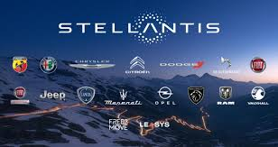

|
Ciao a tutti, io sono Luca Porta e, con questa pagina,
volevo presentarvi ciò che è stato il mio percorso di PCTO.
|
|
Nella parte del corso di Stellantis alta Gamma, ho compreso
quali e quante sono le figure che permettono ad un'impresa di raggiungere il suo obiettivo.
Ho, inoltre, intrapreso un corso sul funzionamento delle maccchine elettriche e sulla meccanica
dell'intelligenza artificiale.
 |
|
Nel corso offerto da Comau, ho imparato come programmare
il robot antropomorfo della rinomata fabbrica ottenendo il patentino
di robotica a livello intermedio con un punteggio di 75/100
|